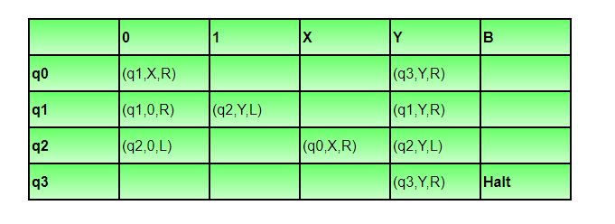
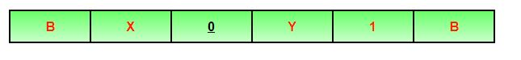
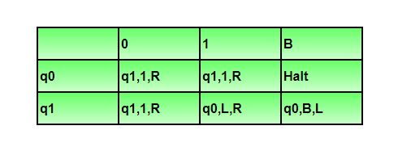
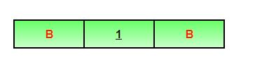
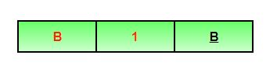
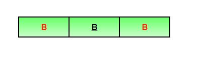

Turing Machine was invented by Alan Turing in 1936 and it is used to accept Recursive Enumerable Languages (generated by Type-0 Grammar).
A turing machine consists of a tape of infinite length on which read and writes operation can be performed. The tape consists of infinite cells on which each cell either contains input symbol or
a special symbol called blank. It also consists of a head pointer which points to cell currently being read and it can move in both directions. A TM is expressed as a 7-tuple (Q, T, B, ∑, δ, q0, B, F) where:
- Q is a finite set of states
- T is the tape alphabet (symbols which can be written on Tape)
- B is blank symbol (every cell is filled with B except input alphabet initially)
- ∑ is the input alphabet (symbols which are part of input alphabet)
- δ is a transition function which maps Q × T → Q × T × {L,R}. Depending on its present state and present tape alphabet (pointed by head pointer), it will move to new state, change the tape symbol (may or may not) and move head pointer to either left or right.
- q0 is the initial state
- F is the set of final states. If any state of F is reached, input string is accepted.
Let us construct a turing machine for L={0n1n|n>=1}
- Q = {q0,q1,q2,q3} where q0 is initial state.
- T = {0,1,X,Y,B} where B represents blank.
- ∑ = {0,1}
- F = {q3}
Transition function δ is given in Table 1 as:

Illustration
Let us see how this turing machine works for 0011. Initially head points to 0 which is underlined and state is q0 as:
 The move will be δ(q0, 0) = (q1, X, R). It means, it will go to state q1, replace 0 by X and head will move to right as:
The move will be δ(q0, 0) = (q1, X, R). It means, it will go to state q1, replace 0 by X and head will move to right as:
The move will be δ(q1, 0) = (q1, 0, R) which means it will remain in same state and without changing any symbol, it will move to right as:
 The move will be δ(q1, 1) = (q2, Y, L) which means it will move to q2 state and changing 1 to Y, it will move to left as:
The move will be δ(q1, 1) = (q2, Y, L) which means it will move to q2 state and changing 1 to Y, it will move to left as:
Working on it in the same way, the machine will reach state q3 and head will point to B as shown:
 Using move δ(q3, B) = halt, it will stop and accepted.
Using move δ(q3, B) = halt, it will stop and accepted.
Note:
- In non-deterministic turing machine, there can be more than one possible move for a given state and tape symbol, but non-deterministic TM does not add any power.
- Every non-deterministic TM can be converted into deterministic TM.
- In multi-tape turing machine, there can be more than one tape and corresponding head pointers, but it does not add any power to turing machine.
- Every multi-tape TM can be converted into single tape TM.
Question: A single tape Turing Machine M has two states q0 and q1, of which q0 is the starting state. The tape alphabet of M is {0, 1, B} and its input alphabet is {0, 1}. The symbol B is the blank symbol used to indicate end of an input string. The transition function of M is described in the following table.

The table is interpreted as illustrated below. The entry (q1, 1, R) in row q0 and column 1 signifies that if M is in state q0 and reads 1 on the current tape square, then it writes 1 on the same tape square, moves its tape head one position to the right and transitions to state q1. Which of the following statements is true about M?
- M does not halt on any string in (0 + 1)+
- M does not halt on any string in (00 + 1)*
- M halts on all string ending in a 0
- M halts on all string ending in a 1
Solution: Let us see whether machine halts on string ‘1’. Initially state will be q0, head will point to 1 as:
 Using δ(q0, 1) = (q1, 1, R), it will move to state q1 and head will move to right as:
Using δ(q0, 1) = (q1, 1, R), it will move to state q1 and head will move to right as:
 Using δ(q1, B) = (q0, B, L), it will move to state q0 and head will move to left as:
Using δ(q1, B) = (q0, B, L), it will move to state q0 and head will move to left as:

It will run in the same way again and again and not halt.
Option D says M halts on all string ending with 1, but it is not halting for 1. So, option D is incorrect.
Let us see whether machine halts on string ‘0’. Initially state will be q0, head will point to 1 as:
 Using δ(q0, 0) = (q1, 1, R), it will move to state q1 and head will move to right as:
Using δ(q0, 0) = (q1, 1, R), it will move to state q1 and head will move to right as:
Using δ(q1,B)=(q0,B,L), it will move to state q0 and head will move to left as:

It will run in the same way again and again and not halt.
Option C says M halts on all string ending with 0, but it is not halting for 0. So, option C is incorrect.
Option B says that TM does not halt for any string (00 + 1)*. But NULL string is a part of (00 + 1)* and TM will halt for NULL string. For NULL string, tape will be,

Using δ(q0, B) = halt, TM will halt. As TM is halting for NULL, this option is also incorrect.
So, option (A) is correct.